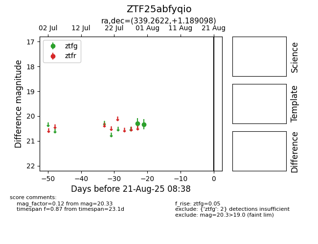

Target ZTF25abfyqio at 2025-08-21 08:38, see:
FINK: fink-portal.org/ZTF25abfyqio
Lasair: lasair-ztf.lsst.ac.uk/objects/ZTF25abfyqio
ALeRCE: alerce.online/object/ZTF25abfyqio
alt names
ZTF25abfyqio (ztf,alerce)
coordinates:
equatorial (ra, dec) = (339.2622,+1.18910)
galactic (l, b) = (68.6770,-47.02834)
photometry
last ztfg=20.33
2 ztfg detections
